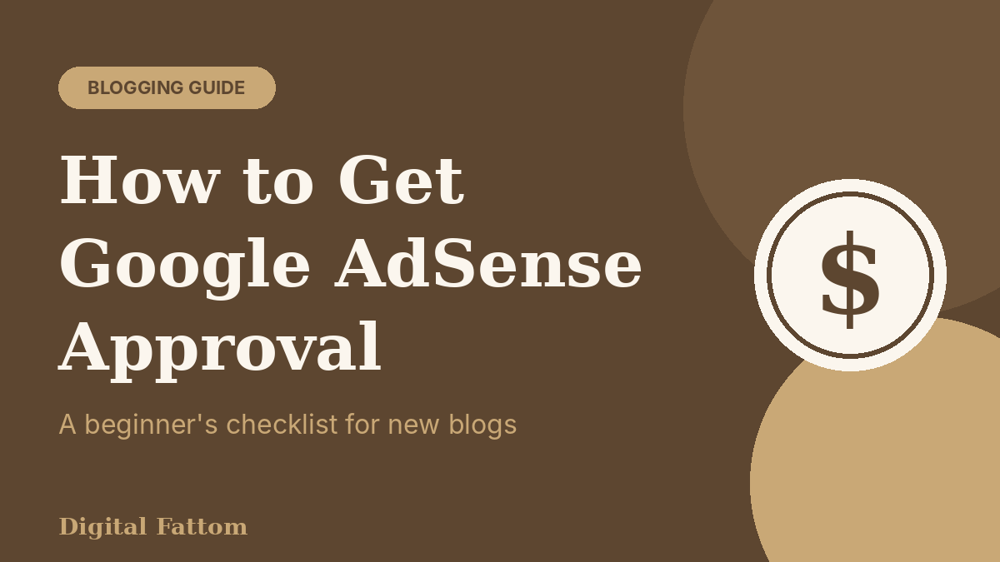
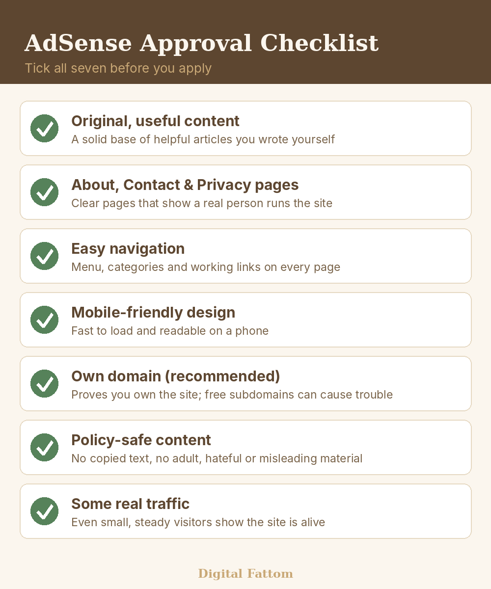
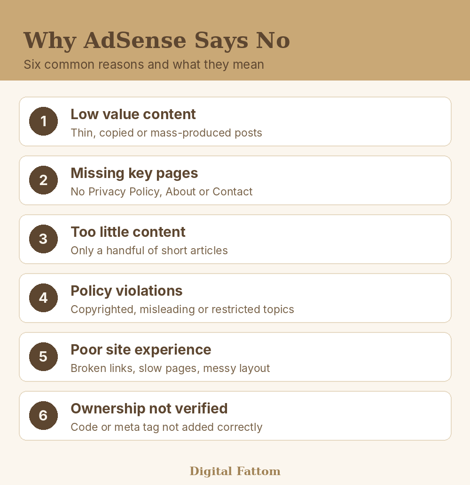

How to Get Google AdSense Approval: A Beginner's Guide for New Bloggers

You wrote your first articles, the blog looks nice, and you applied for AdSense. Then the email arrives: "Your site isn't ready to show ads." It stings, especially when you worked so hard.
The good news is that AdSense rejection is rarely a verdict on you. Most of the time it points to a few fixable things. This guide walks through what Google actually checks, how long approval takes, and what to do if you get a no.
What AdSense actually checks
Google's own help pages are fairly short on this. A site must follow the AdSense Program policies and Google Publisher policies, and Google also checks that you own the domain or can edit the site's content. Review usually takes a few days, but in some cases it can take two to four weeks.
Everything else you read online, like "you need 30 posts" or "you need 1,000 visitors", is community advice, not an official rule. Some of it is useful, but treat it as a rule of thumb. What Google keeps repeating is simple: be useful to real readers and follow the policies.
Write for the reader first. Ads come after trust.
The checklist before you apply
Here is a practical checklist built from Google's requirements and the common causes of rejection. Go through it honestly before you click Apply.

1. Original, helpful content. Write articles from your own knowledge and experience. A teacher writing about study habits, or someone who sells on Gumroad explaining the steps, brings something no copied page can. Many bloggers wait until they have a solid base of articles, often somewhere around 15 to 20, before applying. That number is a habit of the community, not a Google rule.
2. About, Contact and Privacy Policy pages. These show that a real person runs the site. The Privacy Policy matters most, because ads use cookies and readers should know how their data is handled.
3. Easy navigation. A visitor should reach any article in two taps. Use clear categories and make sure no link is broken.
4. A phone-friendly design. Most people in Pakistan read on mobile. If your pages are slow or the text is tiny, readers leave, and reviewers notice a poor experience too.
5. A domain you own. Google checks that you own the domain or can modify its content. A free subdomain on a platform can make this harder, so a custom domain is the safer path if you are building a serious blog. Blogger is a special case, because it is a Google host partner and you add the site through Blogger.
6. Policy-safe topics. No copied text, nothing misleading, and nothing that breaks Google's content rules. When in doubt, read the policy pages before you write about a sensitive topic.
Blogger, WordPress or GitHub Pages: which is easier for approval?
Many beginners ask whether the platform decides the result. It does not, but it changes how easy the setup is.
- Blogger: It is free and owned by Google. Google's help page says sites on host partners such as Blogger are added through the host, not directly in AdSense. That makes setup simple for a first blog. The catch is a free blogspot address and fewer design options.
- WordPress with your own hosting and domain: You control everything, from pages and plugins to speed. It costs money every year, but it looks the most professional and gives you the clearest proof of ownership.
- GitHub Pages or other free static hosts: Great for learning and for building a portfolio, and the design can be fully yours. But the address is a subdomain you do not own, so ownership checks can be harder. If AdSense is your real goal, plan to connect a custom domain.
If money is tight, there is no shame in starting free. Just know where the limits are, and upgrade once the blog begins to grow.
How long does AdSense approval take?
According to Google, a new site shows the status "Requires review" until the checks are done, and then it becomes "Ready". Most reviews finish within a few days. Some take two to four weeks.
So if it has been five days, please do not panic and do not apply again and again. Waiting is part of the process. Use that time to publish more good articles.
Address verification and your first payment
Approval is only the first step. Later, once your earnings reach a small threshold, Google will ask you to confirm your address, usually with a PIN sent by post. Make sure the name and address in your AdSense account match your real details exactly. A mistake here can delay your payout.
Payment rules and thresholds can change by country, so check the current details in your AdSense account before you plan around them.
Can I use AI content and still get approved?
This is one of the most searched questions right now, so let us be careful and honest. Google's guidance focuses on whether content is helpful and original, not only on the tool that wrote it. But pages that are mass-produced, shallow or copied are exactly the ones that tend to fail.
If you use AI to help, treat it as a draft partner. Add your own experience, your own examples, and your own opinion. Check every fact. Read it aloud, and if it does not sound like you, rewrite it. A page that adds nothing new to the internet is a weak page, no matter who wrote it.
Why applications get rejected
If you were rejected, the reason is usually one of these six.

"Low value content" is the most common message. It does not mean your English is bad. It means the pages do not add much for a reader. Rewrite thin posts, go deeper, add real examples, and remove or merge weak ones.
"Site down or unavailable" and ownership problems usually come from a technical slip. Check that your verification code or meta tag is live on the pages Google can reach.
Five mistakes that quietly delay approval
- Applying the day the blog goes live. A site with three posts looks unfinished. Give it time to build a real base of content first.
- Copying and "improving" other people's articles. Changing a few words is not original writing. Readers and reviewers can tell.
- Publishing 20 posts in one weekend. A steady rhythm looks healthier than a sudden dump of thin pages.
- Placing ad code before approval. Follow the steps in your account and add only what AdSense asks you to add.
- Clicking your own ads or asking friends to. This breaks the program policies and can get an account banned for good. Never do it, not even once "to test".
What to do after a rejection
- Read the exact reason in your AdSense account.
- Fix the problem properly. Do not just change one line and reapply the same day.
- Publish a few new, useful articles while you wait.
- Request a new review only when you honestly believe the site is stronger.
A simple plan for the next 30 days
| Week | Focus |
|---|---|
| Week 1 | Add About, Contact and Privacy Policy pages. Fix navigation and broken links. |
| Week 2 | Rewrite your weakest posts with real examples and your own experience. |
| Week 3 | Publish new articles on topics people really search for. |
| Week 4 | Check mobile speed, verify the site in AdSense, then request a review. |
Frequently asked questions
Is it hard to get AdSense approval?
It is not impossible, but it does need patience. Blogs with helpful, original articles and clear pages get approved all the time. Blogs with thin or copied content struggle. The difficulty is mostly about quality, not luck.
How long does Google AdSense take to approve a new site?
Google says review usually takes a few days, but it can take two to four weeks in some cases. Do not resubmit during this time.
Do I need a lot of traffic before I apply?
Google's help pages do not list a traffic number as a requirement. Still, some real readers show that the site is alive and useful, so keep sharing your articles while you wait.
Can I get AdSense approval with AI-written content?
Google looks at whether content is helpful and original. Raw, mass-produced AI text is risky. AI-assisted articles that you edit, fact-check and fill with your own experience are far safer.
Can I apply again after a rejection?
Yes. Fix the reason given in your account, improve the site properly, and then request a new review. Quick, tiny changes rarely help.
Is AdSense available for bloggers in Pakistan?
Many Pakistani bloggers use it, but supported countries, payment methods and thresholds can change. Always check Google's current AdSense help pages for your country before you plan your income.
Finding the right keywords for your articles
AdSense pays when readers visit, and readers arrive through search. You do not need a paid tool to start. Type your topic into Google and read the autosuggest list and the "People also ask" box. Free tools like Google Keyword Planner show how often a phrase is searched. Choose longer, specific phrases such as "AdSense approval on Blogger" over broad ones like "AdSense". New blogs rank far more easily for specific questions.
Approval is a result of steady work, not a trick. A site with real, helpful articles and clear pages is already most of the way there.
Want more guides like this?
Free tips for Pakistani creators and teachers, straight from Digital Fattom.
Subscribe here